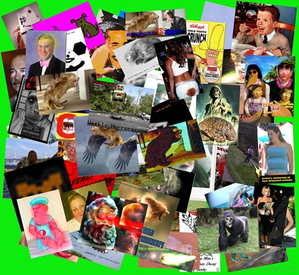
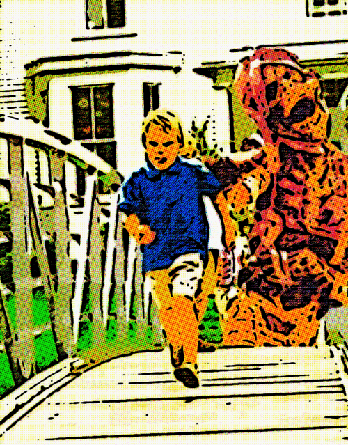

EMToast Year One Retrospective

It’s officially one year since the creation of EMToast. I would like to extend a special thank you to the EMToast contributors who have made the site what it is today.
Thanks Bixby for your countless ideas which never cease to amuse and amaze.
Thank you French Toast for warning us of the perverted uncles, neighbors, and testicular artery tearing women that surround us.
Thanks Toe Fu. All I can say is - that Toe he alright!
{kind=link}

It’s been a long and terrible year. Here are just a few highlights:
https://emtoast.netlify.app/yearly-timeline/#year-2008
https://emtoast.netlify.app/yearly-timeline/#year-2009
Related posts
67 Year Old Cheating Granny Chokes on Meat Bun and Dies
A 67 year old grandmother was having an affair with a 71 year old man. One morning she called him…

EMToast: Top 10 Zombie Sightings
To prepare for the upcoming Halloween celebrations, EMToast has done extensive market research and delved deep into EMToast personal memory…

9 Year Old Boy Commits Suicide After Learning Mummies Are Real
Lodi, NJ – A 9 year old 5th grader attending Hillstop School in Lodi NJ has committed suicide after a…

EMToast: Top 5 Werewolf Sightings
EMToast has done extensive market research and delved deep into EMToast personal memory banks to bring you the top 5…
Comments